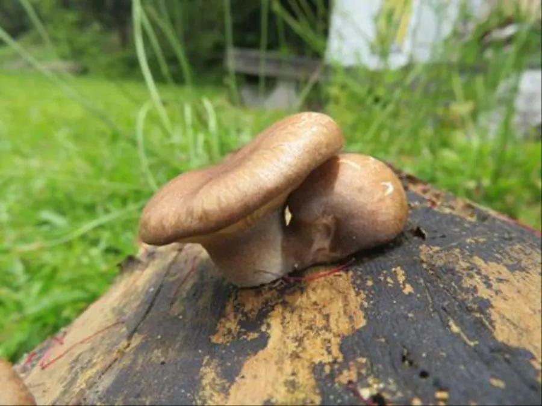

真菌 · 真菌界
鲍鱼菇 Pleurotus abalonus

鲍鱼菇的菌盖厚实、灰褐色，菌肉紧致有弹性，口感似鲍鱼，是台湾和福建一带常见的高温型栽培食用菌。
- 分类
- 门担子菌门纲伞菌纲目伞菌目科侧耳科属侧耳属
- 栖息环境
- 阔叶树枯木与人工培养料，喜高温高湿，出菇适温约 25–30 ℃
- 地理分布
- 原产热带与亚热带，中国台湾、福建、广东等地栽培
- 保护级别
- 暂无评估（IUCN 未评估，栽培食用菌）
物种志
鲍鱼菇是担子菌门侧耳科的真菌，子实体单生或丛生。菌盖呈扇形、半圆形或贝壳状，直径 5–15 cm，表面灰褐色、暗褐色至淡灰褐色，光滑，常有细微的绒毛，边缘内卷；菌肉白色、厚实紧致，有弹性。菌褶延生，白色至淡黄色，较密。菌柄偏生或侧生，白色，粗短，长 2–6 cm。孢子印白色。
鲍鱼菇原产于热带和亚热带地区，野生于阔叶树的枯木上，靠分解木材生长。它属于高温型侧耳，出菇适温约 25–30 ℃，适合在夏季栽培，台湾、福建和广东等地栽培较多，常用木屑、棉籽壳和甘蔗渣作培养料。鲍鱼菇菌肉厚实、口感弹韧，切片煎烤或炒食时形似鲍鱼片，因此得名；它耐运输、货架期较长，是夏季市场的重要菇类。烹调时宜切厚片，快炒或煎制以保持弹性。
形态与习性
- 菌盖扇形或贝壳状，直径 5–15 cm
- 颜色灰褐至暗褐色，有细微绒毛
- 菌肉白色厚实，紧致有弹性
- 菌柄偏生，白色粗短
- 孢子印白色
- 出菇温度适宜约 25–30 ℃，属高温型
- 食用性可食，口感似鲍鱼
趣味知识
- 鲍鱼菇菌肉厚实弹韧，切片后口感很像鲍鱼。
- 它是高温型菇类，夏季也能正常出菇。
- 鲍鱼菇耐运输、货架期较长，适合夏季上市。
- 切厚片快炒或煎制，最能保持它的弹性。